Courses › Human Anatomy › Module 3
Human Anatomy · 6111
Module 3 — Hip and Thigh Region
Topics: 3.1 Posterior Hip & Thigh (3 lectures) • 3.2 Anterior Hip & Thigh • 3.3 Medial Thigh — plus the palpation skills list
📖 How to Use These Notes
- Best used with the lecture playing — keep these open, follow along, and add your own notes as you watch
- Lecture banners mark the start of each topic and run in the same order as the videos
- 🎙 Callouts = direct insights from the instructor's transcript
- ★ Tips = exam-relevant content or things the instructor told you to prepare
- Figures are taken directly from the module's slide decks
- Each topic ends with its own Quick-Reference Glossary
- Written from last year's recordings — if a lecture has been re-recorded or resequenced, Canvas wins
- Watch Dr. Litmer's lecture videos in your own Canvas module — video links are cohort-specific
- Knowledge Check #2 covers this module: 10 questions, open note (NOT open partner/AI), 15 minutes
- Origin → insertion predicts action. That reasoning move is the whole module.
TOPIC 3.1
Posterior Hip & Thigh — Part 1: Femur Osteology
- The femur is the longest and strongest bone in the body, articulating proximally with the acetabulum and distally at the knee (next module).
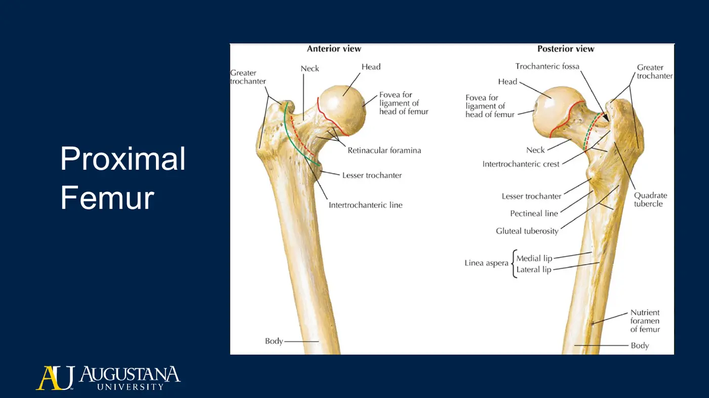
| Landmark | Why it matters |
|---|---|
| Head | Articulates with the acetabulum |
| Neck | Connects head to body; hip capsule and its reinforcing ligaments attach here |
| Greater trochanter | The grand central station of hip-muscle attachments |
| Lesser trochanter | Iliopsoas insertion |
| Intertrochanteric crest / quadrate tubercle | Quadratus femoris insertion |
| Trochanteric fossa | Obturator externus insertion |
| Pectineal line · gluteal tuberosity · linea aspera | Pectineus / glute max + vastus origins / adductor + vastus + short-head BF attachments |
| Adductor tubercle (medial epicondyle) | Adductor magnus, hamstring part |
Part 2: Posterior & Lateral Hip Musculature
The gluteus maximus is the superficial layer; reflect it and the deep layer appears. The tables run superficial → deep.
| Muscle | Origin → Insertion | Nerve | Actions |
|---|---|---|---|
| Gluteus maximus | Ilium posterior to posterior gluteal line + dorsal sacrum/coccyx + sacrotuberous lig. → IT tract + gluteal tuberosity | Inferior gluteal | Extension, ER, assists abduction — the body's powerhouse (your jump muscle) |
| Gluteus medius | Ilium between anterior + posterior gluteal lines → LATERAL greater trochanter | Superior gluteal | Abduction; anterior fibers IR; single-leg pelvic stabilization |
| Gluteus minimus | Ilium between anterior + inferior gluteal lines → ANTERIOR greater trochanter | Superior gluteal | Abduction, IR, pelvic stabilization |
| TFL | Outer lip iliac crest + ASIS → IT tract → Gerdy's tubercle (lateral tibial condyle) | Superior gluteal | Hip flexion, IR, abduction; IT tract runs posterior to the knee axis → helps hold the knee extended |
⚕ Clinical Spotlight — Trendelenburg
- Weak gluteus medius (± minimus) on the stance leg → the pelvis drops on the OPPOSITE side during single-leg stance.
- You'll formally analyze this aberrant gait pattern in Movement Science.
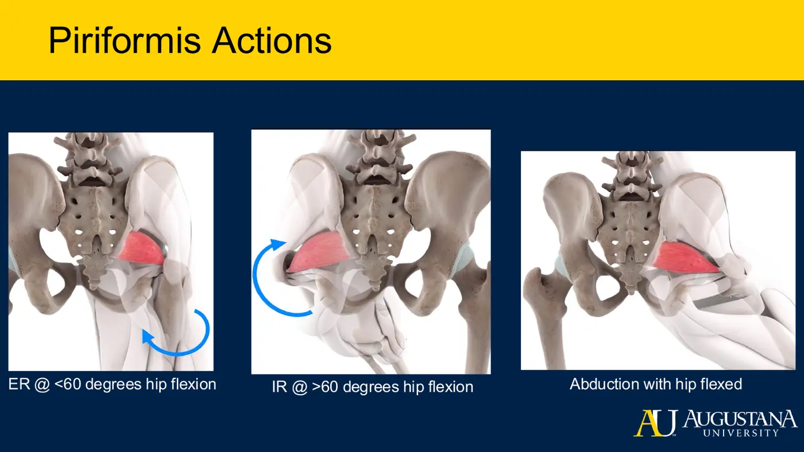
- Piriformis — origin anterior sacrum (S2–S3, sometimes S4) → greater trochanter; its own nerve. Position-dependent actions: below ~60° hip flexion it externally rotates; above ~60° the attachment moves anterior to the axis and it INTERNALLY rotates; flexed, it abducts. One muscle, three answers — know the position.
| Deep rotator | Origin → Insertion | Nerve | Actions |
|---|---|---|---|
| Obturator internus | Posterior (internal) surface of obturator membrane → medial greater trochanter | Nerve to obturator internus | ER when hip extended; abduction when flexed; stabilizes hip + supports pelvic floor |
| Obturator externus | Anterior (external) surface of obturator membrane → trochanteric fossa | Obturator | ER, stabilization |
| Superior gemellus | Ischial spine (the superior landmark) → medial greater trochanter | N. to obturator internus | ER extended / abduction flexed / stabilize |
| Inferior gemellus | Ischial tuberosity → medial greater trochanter | N. to quadratus femoris | Same as superior gemellus |
| Quadratus femoris | Ischial tuberosity → intertrochanteric crest (quadrate tubercle) | Its own nerve | ER, stabilization |
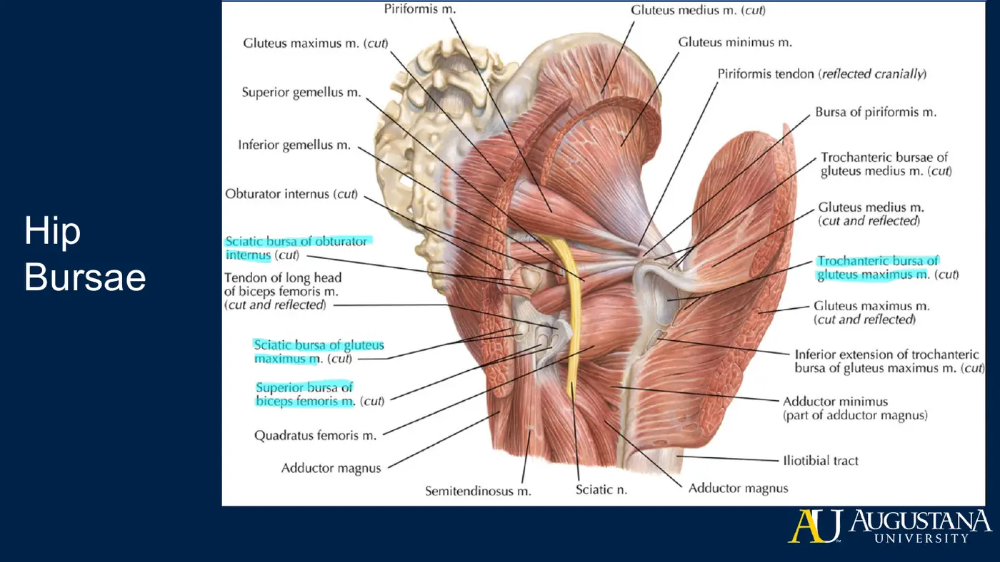
- Bursae — the trochanteric bursa of the gluteus maximus is the most commonly irritated (lateral hip pain); also the superior bursa of biceps femoris and the sciatic bursae of glute max and obturator internus.
- Neurovascular traffic: superior gluteal nerve + artery exit the greater sciatic foramen above piriformis; inferior gluteal nerve/artery, nerve to piriformis, nerve to quadratus femoris, nerve to obturator internus, and the sciatic nerve all exit below it.
Part 3: Posterior Thigh — the Hamstrings
| Muscle | Origin → Insertion | Nerve | Actions |
|---|---|---|---|
| Biceps femoris — long head | Ischial tuberosity → lateral fibular head | Tibial division | Hip extension, knee flexion, ER of the leg |
| Biceps femoris — short head | Linea aspera + lateral supracondylar line → lateral fibular head | COMMON FIBULAR division — the one hamstring exception | Knee flexion, ER |
| Semimembranosus (wider, broader) | Ischial tuberosity → medial condyle of tibia | Tibial division | Hip extension, knee flexion, IR |
| Semitendinosus (thin, cord-like) | Ischial tuberosity → proximal medial tibia via pes anserinus | Tibial division | Hip extension, knee flexion, IR |
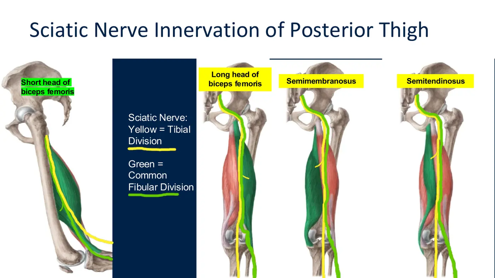
- Sciatic nerve (L4–S3): exits below piriformis, enters the posterior thigh between the ischial tuberosity and the greater trochanter — a locating landmark you can palpate around. Its two divisions: tibial (medial) and common fibular (lateral). Proximity rule again: medial muscles (long head, semimembranosus, semitendinosus, hamstring part of adductor magnus) = tibial; the laterally-placed short head = common fibular.
- Pes anserinus — Latin for “goose's foot”: the conjoined insertion of Sartorius, Gracilis, semiTendinosus on the proximal medial tibia. Anterior → posterior mnemonic: “Say Grace before Tea.”
📺 Required watching & resources — Topic 3.1
- Donor dissection: gluteal region, superficial (watch → ~1:00) (Seattle Science Foundation)
- Donor dissection: gluteal region, deep
- Donor dissection: posterior thigh, superficial (→ ~1:47)
- Donor dissection: posterior thigh, deep (→ ~3:20)
- KenHub 3D videos: Glute Max · Glute Med · Piriformis (index)
- KenHub study unit: Muscles of the Hip & Thigh
Topic 3.1 — Quick-Reference Glossary
| Term | Definition |
|---|---|
| Greater / lesser trochanter | Hip-muscle hub / iliopsoas insertion |
| IT tract → Gerdy's tubercle | Glute max + TFL insertion path to the lateral tibia |
| Trendelenburg | Contralateral pelvic drop from weak stance-side glute med |
| Piriformis 60° rule | ER below ~60° hip flexion, IR above, abduction when flexed |
| Deep rotators | Obturator int/ext, gemelli, quadratus femoris (+ piriformis) |
| Above vs below piriformis | Superior gluteal n./a. above; everything else + sciatic below |
| Hamstring innervation exception | Short head of biceps femoris = common fibular division |
| Pes anserinus | Say Grace before Tea — sartorius, gracilis, semitendinosus |
| Trochanteric bursa | The commonly irritated lateral-hip pain generator |
TOPIC 3.2
Anterior Hip & Thigh
1. Anterior Hip Muscles
| Muscle | Origin → Insertion | Nerve | Actions |
|---|---|---|---|
| Iliopsoas (psoas major + iliacus) | Psoas: T12–L5 transverse processes, bodies + discs. Iliacus: superior 2/3 iliac fossa/crest + lateral sacrum → lesser trochanter | Psoas major: anterior rami L1–L3 directly; iliacus: femoral n. | Powerful hip flexion + ER; psoas bilaterally flexes the trunk, unilaterally side-bends it |
| Psoas minor | T12–L1 bodies → pectineal line + iliopubic eminence — does not cross the hip | Anterior ramus L1 | Weak trunk flexion only (small cross-section) |
| Sartorius | ASIS → wraps medially around the thigh → pes anserinus (proximal medial tibia) | Femoral n. | Hip flexion + ER + abduction assist, knee flexion — the “cross your ankle over your opposite thigh” muscle |
- Bursae here: iliopectineal, the rectus femoris bursa near the AIIS, and the subtendinous bursa of the iliacus — friction reducers where tendons cross bone.
2. The Femoral Triangle and Retroinguinal Space
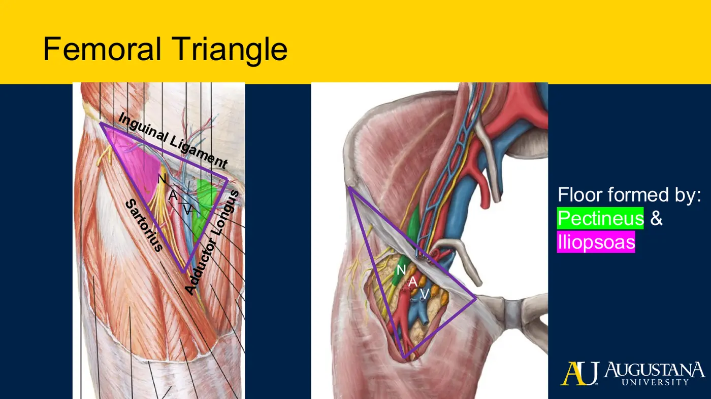
| Feature | Structure |
|---|---|
| Superior border | Inguinal ligament (ASIS → pubic tubercle) |
| Lateral border | Sartorius |
| Medial border | Adductor longus |
| Floor | Iliopsoas + pectineus |
| Contents, lateral → medial | N-A-V: femoral Nerve, Artery, Vein |
- Behind the inguinal ligament sits the retroinguinal space: a muscular compartment (iliacus + femoral nerve) and a vascular compartment (femoral artery + vein + the femoral canal). The canal carries the spermatic cord + ilioinguinal nerve in males (round ligament + ilioinguinal nerve in females) — the larger male opening is why inguinal hernias are more prevalent in males.
3. Quadriceps Femoris and the Femoral Nerve
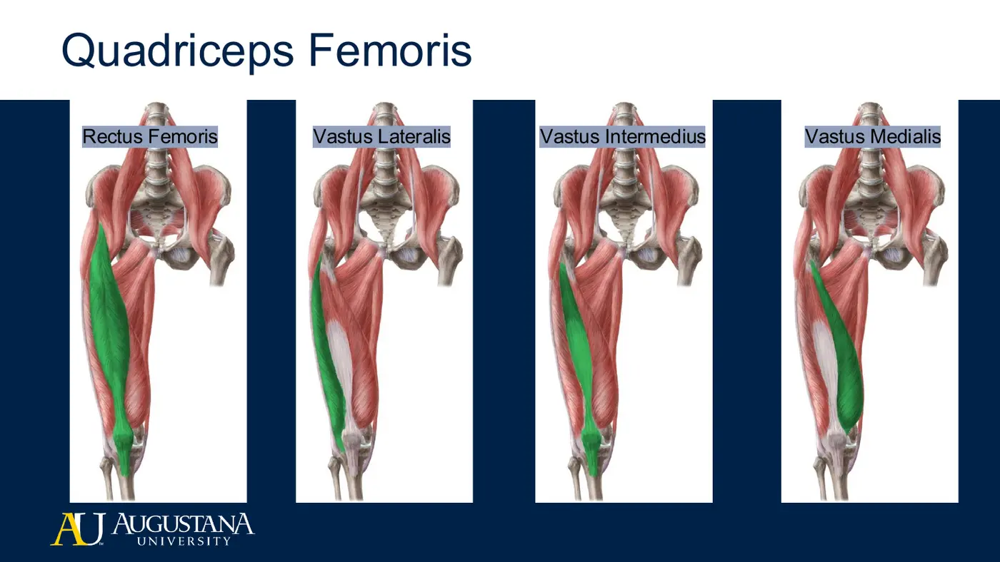
| Head | Origin | Special note |
|---|---|---|
| Rectus femoris (superficial) | AIIS + supra-acetabular groove | The only head crossing the hip → adds hip flexion |
| Vastus lateralis | Greater trochanter, gluteal tuberosity, lateral lip of linea aspera | Largest |
| Vastus intermedius | Anterior + lateral femoral shaft | Deep to rectus femoris |
| Vastus medialis | Intertrochanteric line + medial lip of linea aspera | Most medial |
- All four insert through the patella → patellar ligament → tibial tuberosity and together produce knee extension. Canvas intro: the quadriceps is the strongest muscle in the human body (“Quadzilla”).
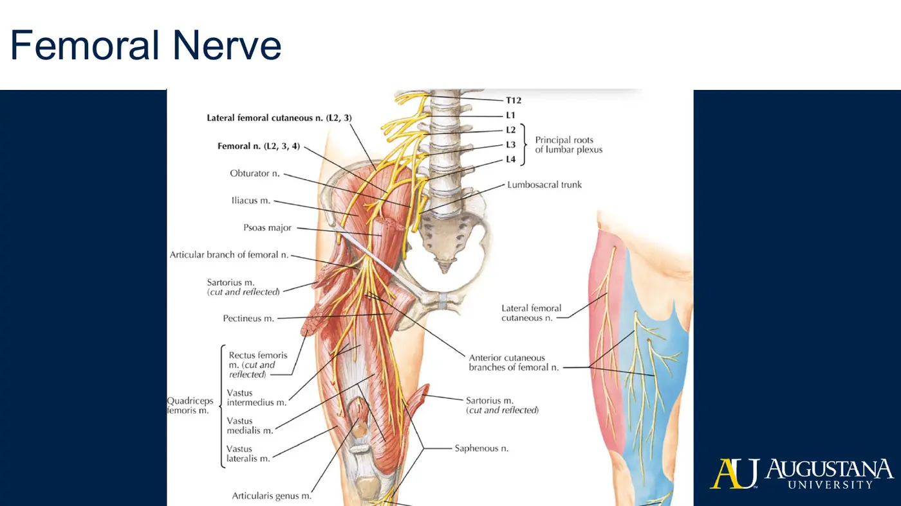
- Femoral nerve (L2–L4): runs through the posterior abdominal wall along the iliacus (innervating it) → under the inguinal ligament → sartorius, pectineus, all four quadriceps heads → continues as the saphenous nerve, the cutaneous supply of the medial anterior thigh and medial knee.
📺 Required watching & resources — Topic 3.2
- Donor dissection: superficial femoral triangle (3 min) (Seattle Science Foundation)
- KenHub study unit: Muscles of the Hip & Thigh
Atlas review: Netter plates 498, 500, 502, 505, 509, 510.
Topic 3.2 — Quick-Reference Glossary
| Term | Definition |
|---|---|
| Iliopsoas | Psoas major + iliacus → lesser trochanter; the hip-flexion powerhouse |
| Psoas minor | Doesn't cross the hip — weak trunk flexor only |
| Femoral triangle | Inguinal lig. / sartorius / adductor longus; floor iliopsoas + pectineus |
| NAV | Femoral Nerve-Artery-Vein, lateral → medial |
| Femoral canal | Hernia site — bigger opening in males |
| Rectus femoris | The only quad head that flexes the hip (AIIS origin) |
| Patellar ligament | The quads' shared final insertion to the tibial tuberosity |
| Saphenous nerve | Femoral nerve's cutaneous continuation to the medial knee |
TOPIC 3.3
Medial Thigh
1. The Adductor Group
| Muscle | Origin → Insertion | Nerve | Actions |
|---|---|---|---|
| Pectineus | Superior pubic ramus → pectineal line of femur (most proximal adductor insertion) | Femoral (sometimes obturator too) — the dual-innervation oddball | Adduction + weak flexion |
| Adductor longus | Body of pubis inferior to pubic crest → middle third of linea aspera | Obturator | Adduction + weak flexion |
| Adductor brevis | Anterior body of pubis + inferior pubic ramus → pectineal line + proximal linea aspera (deep to longus) | Obturator | Adduction + weak flexion |
| Adductor magnus — adductor part | Ischiopubic ramus → gluteal tuberosity, medial lip linea aspera, medial supracondylar line | Obturator | Adduction + flexion |
| Adductor magnus — hamstring part | Ischial tuberosity → adductor tubercle | Tibial division of sciatic | Hip EXTENSION (posterior to the axis) |
| Gracilis | Anterior body of pubis + inferior pubic ramus → pes anserinus | Obturator | Adduction, knee flexion, knee IR |
- Obturator nerve (L2–L4) enters through the obturator canal → adductors + gracilis (+ part of pectineus), then supplies cutaneous sensation to the distal medial thigh.
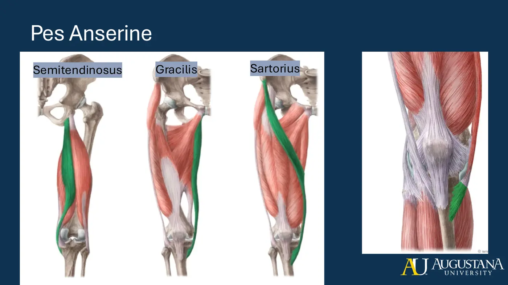
- Pes anserine functional logic: sartorius inserts most anteriorly (hip ER + flexion, knee flexion), gracilis in the middle (adduction), semitendinosus most posteriorly (hip extension + knee flexion) — together a medial-knee stabilizing complex. Say Grace before Tea.
2. Reasoning From the Axis of Rotation
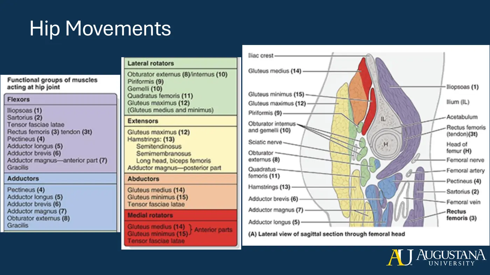
| Muscle path vs hip axis | Resulting action |
|---|---|
| Originates + inserts anterior to the axis | Flexion |
| Posterior to the axis | Extension |
| Lateral to the axis | Abduction |
| Medial to the axis | Adduction |
| Origin medial → insertion lateral | Internal rotation |
| Origin lateral → insertion medial | External rotation |
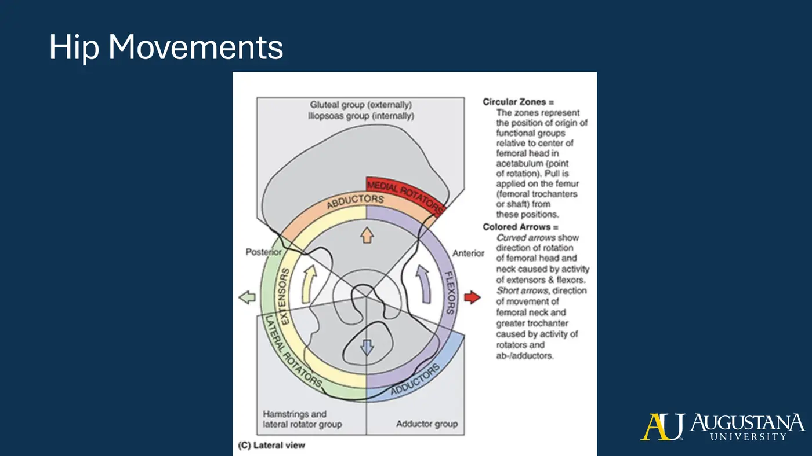
- Knee naming flips relative to anterior/posterior because of embryologic torsion — knee flexion moves the leg posteriorly, extension anteriorly. Dr. Litmer's advice: use your hand as a 3D model and physically walk each muscle's origin toward its insertion — 2D slides can't do the transverse plane justice.
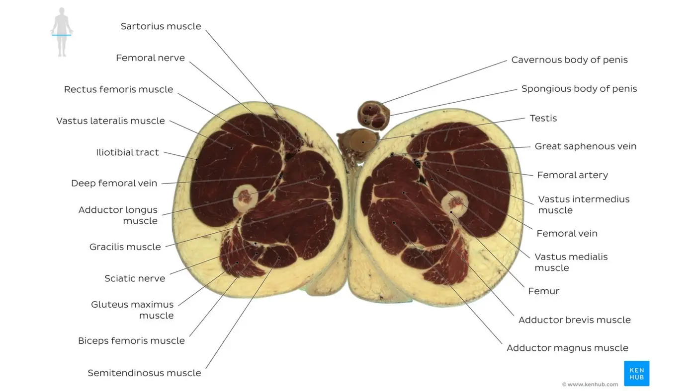
📺 Required watching & resources — Topic 3.3
- Donor dissection: deep anterior + medial thigh (9 min) (Seattle Science Foundation)
- KenHub study unit: Neurovasculature of the Hip & Thigh
- Padlet: interactive Hip Muscle Actions diagram (Dr. Litmer) (shared class study guide)
Topic 3.3 — Quick-Reference Glossary
| Term | Definition |
|---|---|
| The five adductors | Pectineus, adductor longus/brevis/magnus, gracilis |
| Pectineus innervation | Femoral, sometimes obturator — the dual case |
| Adductor magnus two-part rule | Adductor part = obturator + flexion; hamstring part = tibial division + extension |
| Adductor tubercle | Hamstring-part insertion on the medial epicondyle |
| Gracilis | The only adductor crossing the knee — flexes + internally rotates it |
| Axis-of-rotation reasoning | Anterior=flex · posterior=extend · lateral=abduct · medial=adduct |
| Embryologic torsion | Why knee flexion/extension naming flips direction |
SKILLS & ASSESSMENT
Palpation List · Knowledge Check #2
- Pelvic and Hip Palpation Skills List — “use your body as a teacher.” Work through palpating each structure on yourself and a partner; the full list PDF is in this course's readings folder in this Drive. These skills feed directly into the lab practical and every MSK course after this.
✅ Knowledge Check #2 (covers Module 3)
- 10 questions · 15-minute time limit
- Open note — NOT open partner and NOT open AI
- Check your own Canvas for the due date